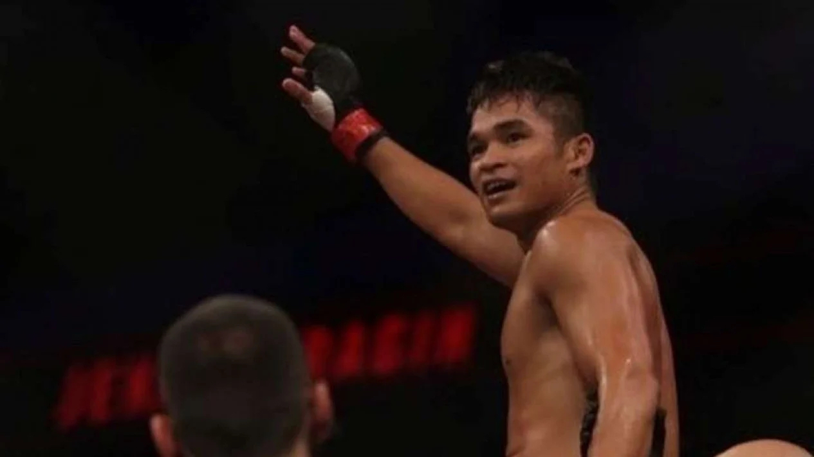
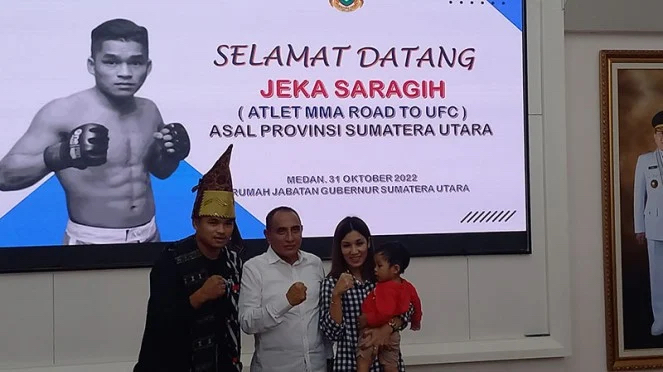

二零二二 十一月 七号
北苏门答腊杰卡·萨拉吉(Jeka Seragih)起飞去美国为了Road To UFC的准备
杰卡·萨拉吉
棉兰 - 从北苏门答腊来的综合格斗选手杰卡·萨拉吉(Jeka Seragih)到了Road To UFC比赛决赛。决赛将在韩国现场举行。这次，他的对手是来自印度的一名27岁的不败格斗选手。
10月31日,在北苏门答腊总督埃迪·拉哈亚马迪（Edy Rahyamadi）的官邸告诉记者们”我偶然能通过，以后可以继续参加韩国决赛。“
北苏门答腊总督埃迪·拉哈亚马迪会见杰卡·萨拉吉时
在阿布扎比与韩国对手赢得半决赛后，杰卡透露，他正准备在美国比赛和训练。计划于2022年12月前往美国。 ”对这决赛，我最重要的准备会在美国。所以我应该会花三个月在哪儿。“ 杰卡继续说。
杰卡请求所有印尼人，尤其是北苏门答腊和西马伦贡摄政区的人民祈祷他的UFC的成功。
-林瑞肯